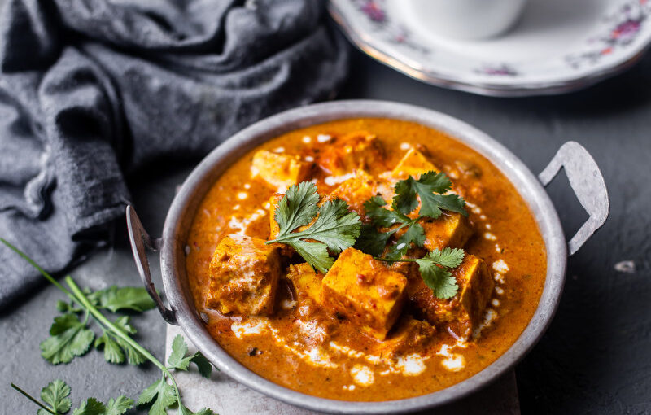
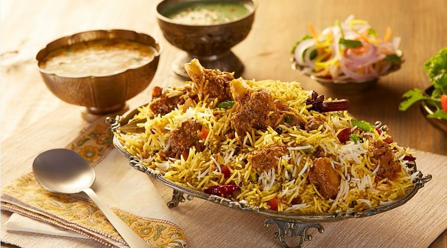

Paneer Tikka Masala
A rich and creamy tomato-based curry with marinated paneer cubes, grilled to perfection.

Biryani
A world renowned rice dish loved by people mainly eaten in India and indian subcontinent

Gulab Jamun
Gulab jamun are soft milk-based balls, deep-fried and soaked in a sweet & rose-flavored syrup.